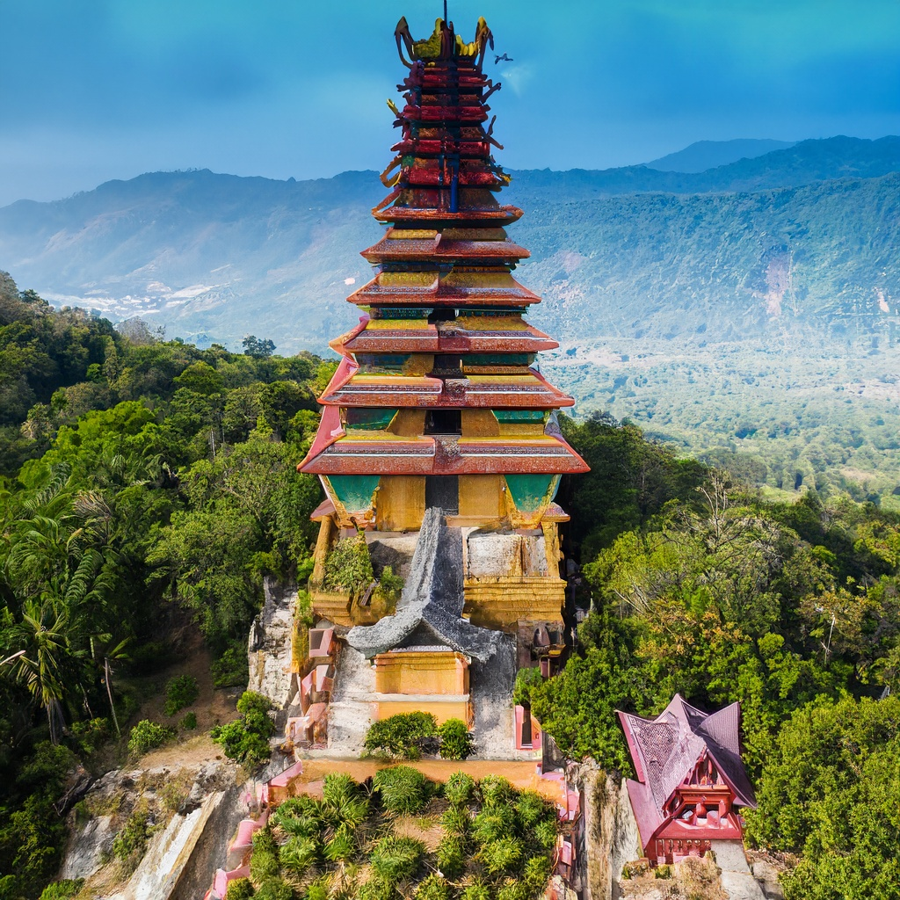
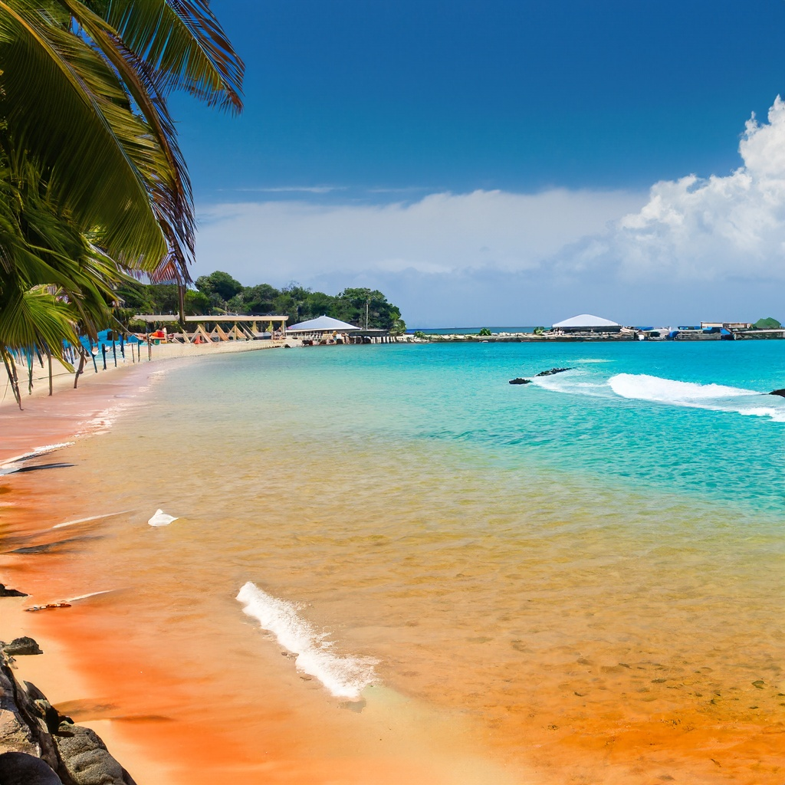
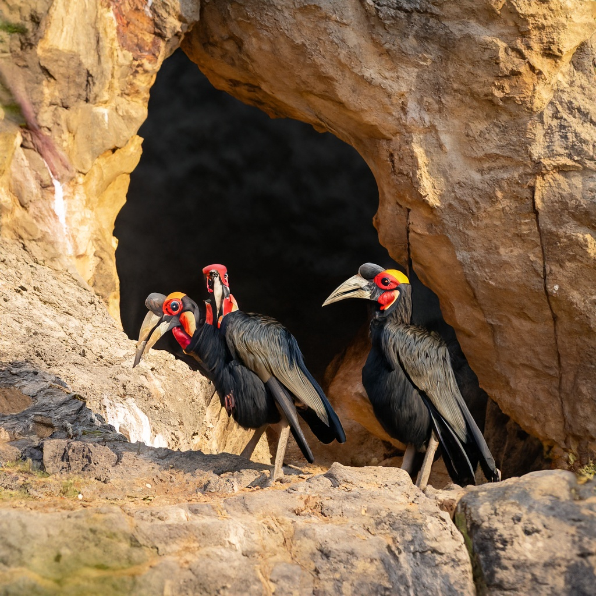

De Tempel van Mondar was gebouwt door Mondar de Tweede, die hem bouwde om de God Rendanda te aanbidden. In 1255 werd de koepel door een aanval van de Morkesen Vernietigd, de tempel werd toen verhoogd en een nieuwe koepel was aangebracht.

De Oranje stranden van Tlemerena lijken net op het paradijs. Deze prachtige oranje stranden op de noordkust van roxanie zijn ideaal voor zwemmen, zonnen en lekker luieren. Pak lekker je rust op deze hemelse stranden

Mount Leorivia is de Grootste berg op Aarde. De berg is hol en daarin zit een groot tropisch regenwoud, waar de Zuidelijke Hoornraaf leeft. De Zuikdelijke Hoornraaf is heilig in Roxanie en daarom is deze holle binnenkant beschermt natuurgebied.